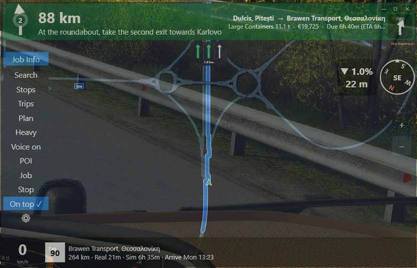
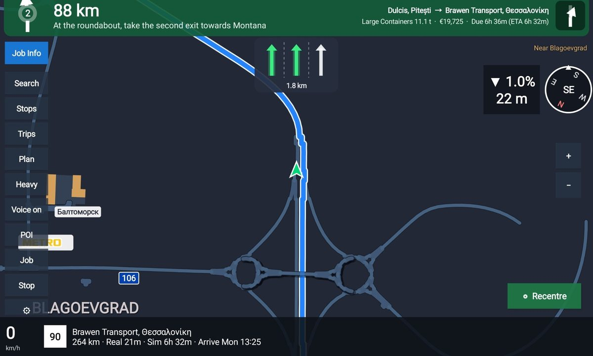

ETS2-ATS GPS

Turn-by-turn navigation built from your own game install and map mods, with spoken directions and lane guidance. Put it on a second screen, see-through over the game, or on a tablet beside you.
- Routes to your job, to the pickup of a Freight Market job, or anywhere on the map
- Lane guidance, roundabout exits, flyovers in 3D, road shields and speed limits
- Nearest fuel, rest area, service, weigh station, dealer or ferry
- Voice control in Windows: "GPS, take the job", "minimize", "how far"
- Trip planner, saved trips, Heavy / Fast / Tour routing
- Metric or imperial units in either game
The Windows setup also installs the lane overlay: a small always-on-top lane panel for over the game. iPad, iPhone and any browser use the web version served by the Windows app. All Windows releases · All Android releases
